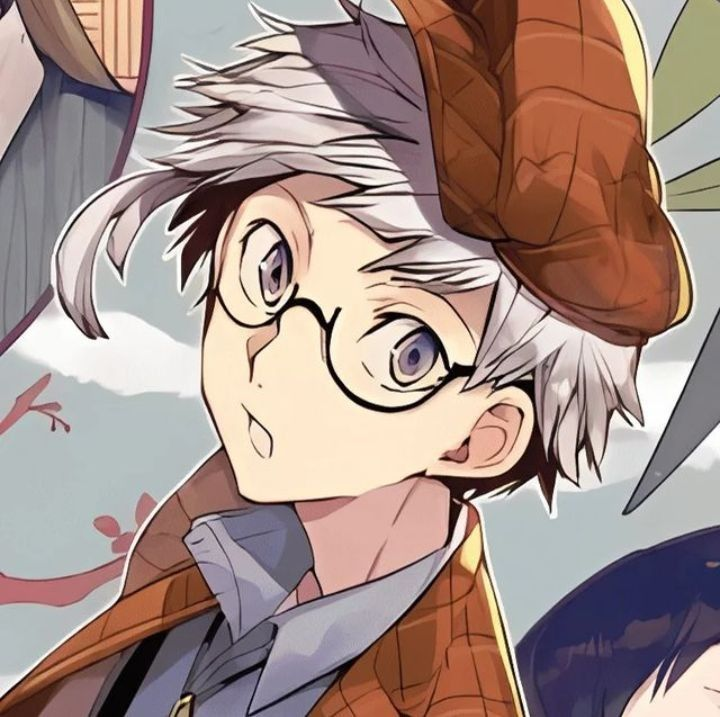
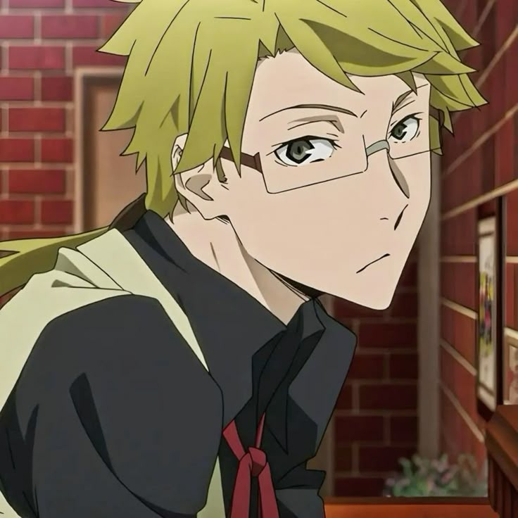
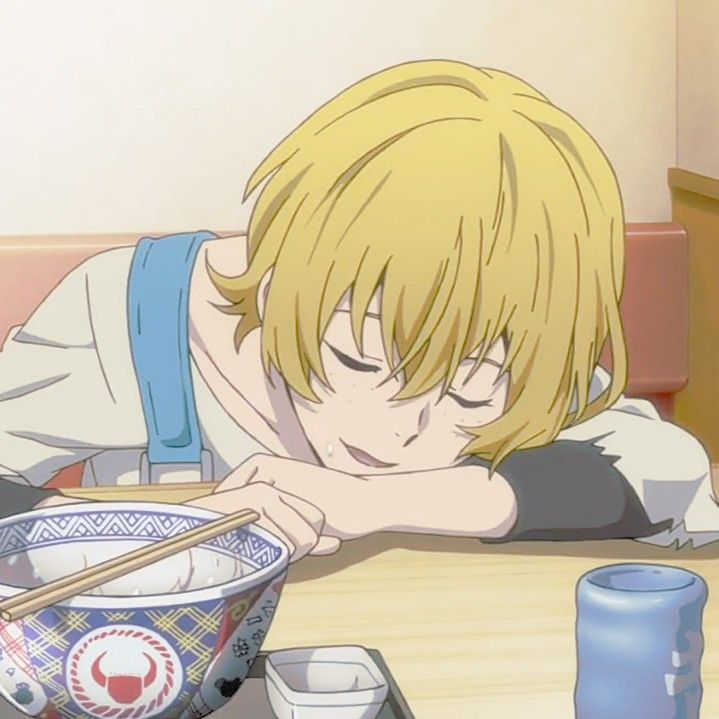
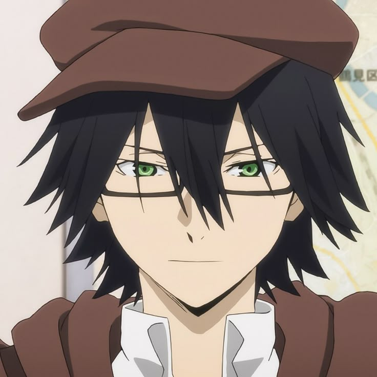
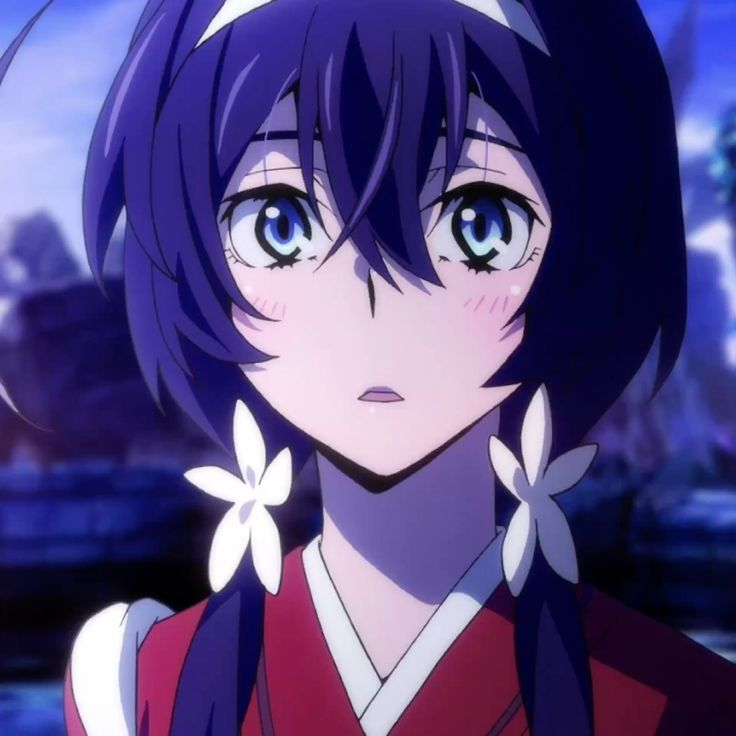
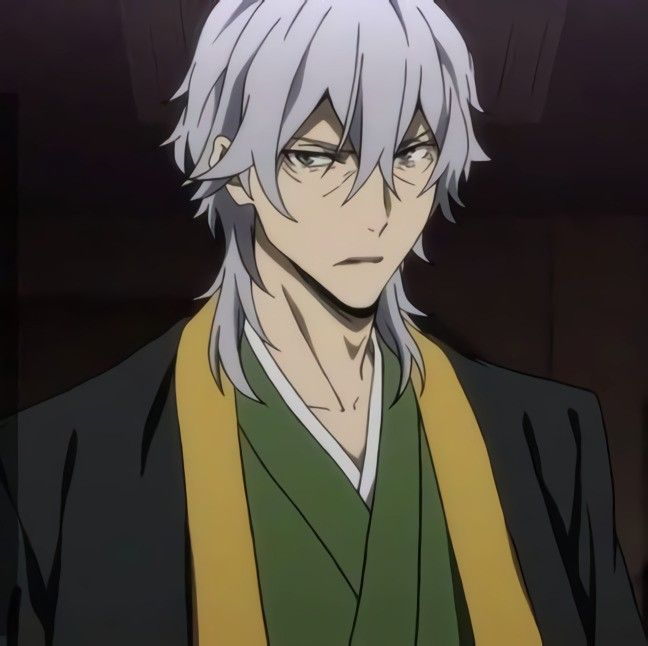
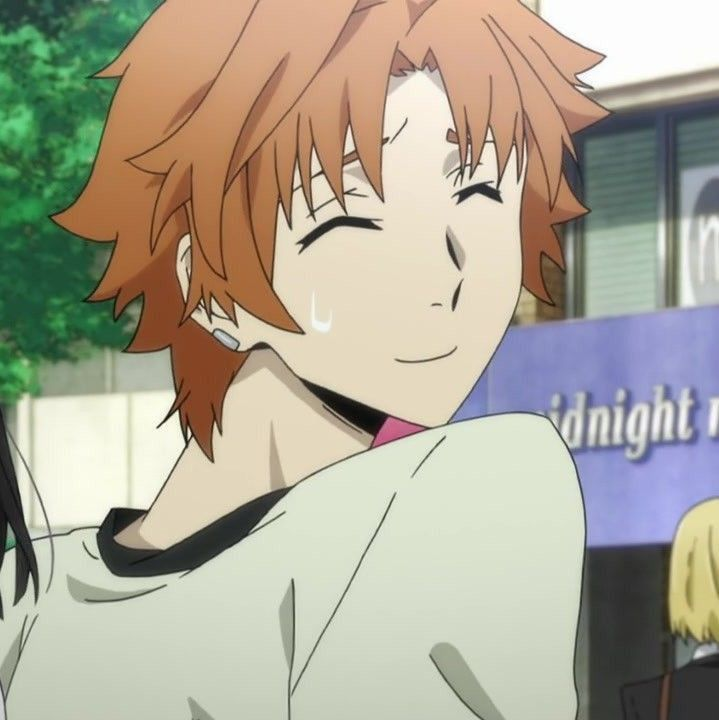
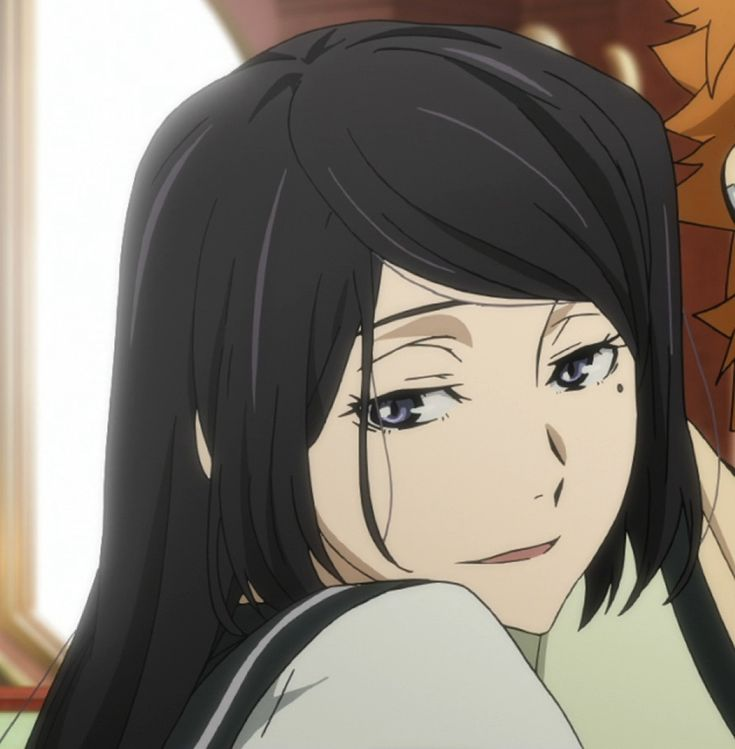

Atsushi Nakajima

Tanggal Lahir: 5 Mei
Tinggi: 170 cm
Kepribadian: Pemalu, peduli pada orang lain, sempat tidak percaya diri tapi tumbuh jadi pemimpin
Afliasi: Armed Detective Agency
Kemampuan: Beast Beneath the Moonlight
Memungkinkan Atsushi berubah sebagian atau sepenuhnya menjadi harimau putih raksasa. Memberi kekuatan fisik luar biasa, kecepatan, dan kemampuan regenerasi tinggi
Osamu Dazai
Tanggal Lahir: 19 Juni
Tinggi: 181 cm
Kepribadian: Cerdas, manipulatif, penuh teka-teki, humor gelap, sering berpura-pura ingin bunuh diri
Afliasi: Armed Detective Agency (dulu Port Mafia)
Kemampuan: No Longer Human
Kemampuan yang dapat menonaktifkan atau membatalkan kekuatan supernatural orang lain hanya dengan sentuhan. Sangat berbahaya karena langsung menetralkan musuh.
Doppo Kunikida

Tanggal Lahir: 15 Agustus
Tinggi: 189 cm
Kepribadian: Serius, idealis, sangat terorganisir, berpegang teguh pada prinsip
Afliasi: Armed Detective Agency
Kemampuan: The Matchless Poet
Dapat mengeluarkan objek dari buku catatannya, selama benda itu bisa digambarkan secara fisik dan cukup kecil. Misalnya: senjata, tali, atau pelindung.
Akiko Yosano
Tanggal Lahir: 7 Desember
Tinggi: 166 cm
Kepribadian: Elegan dan tenang, tapi kejam pada pasien karena kemampuan penyembuhannya butuh kondisi kritis
Afliasi: Armed Detective Agency
Kemampuan: Thou Shalt Not Die
Mampu menyembuhkan luka parah dan bahkan menyelamatkan nyawa. Namun, pasien harus berada dalam kondisi kritis agar kemampuannya bisa bekerja.
Kenji Miyazawa

Tanggal Lahir: 27 Juli
Tinggi: 140 cm
Kepribadian: Ceria, naif, suka membantu orang, sangat kuat bila lapar
Afliasi: Armed Detective Agency
Kemampuan: Undefeated by the Rain
Memiliki kekuatan fisik luar biasa, tapi hanya ketika lapar. Ia bisa mengangkat benda sangat berat dan tahan terhadap serangan fisik berat.
Ranpo Edogawa

Tanggal Lahir: 21 Oktober
Tinggi: 168 cm
Kepribadian: Egois, santai, suka dipuji, sangat cerdas meski tidak punya kekuatan supranatural
Afliasi: Armed Detective Agency
Kemampuan: Super Deduction (non-supernatural)
tidak memiliki kekuatan supernatural. Namun, kecerdasannya membuatnya mampu memecahkan kasus secara instan, seolah-olah ia punya kekuatan
Kyouka Izumi

Tanggal Lahir: 4 November
Tinggi: 148 cm
Kepribadian: Pendiam, sopan, ingin menjalani hidup baik setelah masa lalu kelam. Dulu anggota Port Mafia, kini detektif pemula.
Afliasi: Armed Detective Agency (mantan Port Mafia)
Kemampuan: Demon Snow
Memanggil roh pembunuh yang menyerang target dengan pedang. Awalnya tidak bisa dikendalikan, tapi sekarang lebih stabil.
Yukichi Fukuzawa

Tanggal Lahir: 28 Januari
Tinggi: 186 cm
Kepribadian: Tenang, bijak, sangat berwibawa. Pemimpin dan pendiri Armed Detective Agency.
Afliasi: Armed Detective Agency (Pemimpin)
Kemampuan: All Men Are Equal
Menstabilkan kemampuan anggota agensi agar bisa dikendalikan dengan baik.
Junichirou Tanizaki

Tanggal Lahir: 7 Juli
Tinggi: 174 cm
Kepribadian: Santai, pendiam, sangat dekat dengan adiknya. Loyal pada agensi.
Afliasi: Armed Detective Agency
Kemampuan: Light Snow
Menciptakan ilusi visual pada area tertentu.
Naomi Tanizaki

Tanggal Lahir: Tidak disebutkan
Tinggi: Sekitar 160 cm
Kepribadian: Ceria, sangat menyayangi kakaknya (Junichirou)
Afliasi: Bukan anggota aktif, tapi bekerja di kantor agensi
Kemampuan: Tidak memiliki kekuatan supernatural
.jpeg)